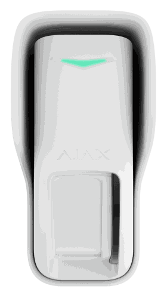

MotionCam Outdoor HighMount (PhOD) Jeweller
Réf. fabricant MC.OHMP.J · Détecteurs de mouvements · Ajax Systems, marque partenaire
Sur devisÉtude, fourniture et installation par Active Sécurité 974
MotionCam Outdoor HighMount (PhOD) Jeweller : détecteur de mouvement PIR sans fil avec des possibilités de vérification photo étendues. Pour une utilisation à l'extérieur et à l'intérieur à une hauteur de 2 à 4 m; Communication : sans fil. Matériel Ajax Systems sélectionné, installé et paramétré chez vous par Active Sécurité 974, partout à La Réunion.
- Étude et devis gratuits, sans engagement
- Installation chez vous, partout à La Réunion
- Partenaire agréé Ajax Systems
Caractéristiques
En bref.
Données issues de la fiche officielle du fabricant, reformulées. Fiche constructeur (nouvel onglet)
| Modèle | MotionCam Outdoor HighMount (PhOD) Jeweller |
|---|---|
| Référence fabricant | MC.OHMP.J |
| Gamme | Baseline |
| Type | Détecteurs de mouvements |
| Points clés |
|
| Coloris officiels | Blanc |
| Prix | Sur devis |
| Disponibilité | À confirmer lors du devis |
Dans la même famille
Autres produits.
